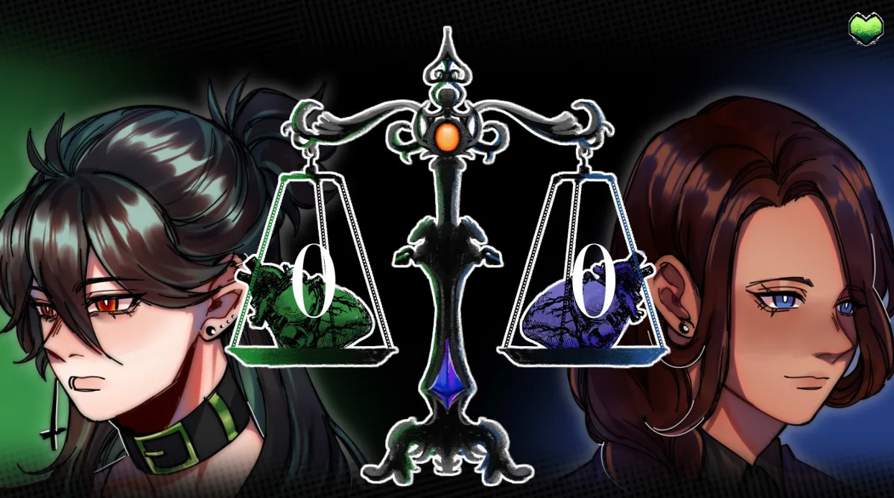
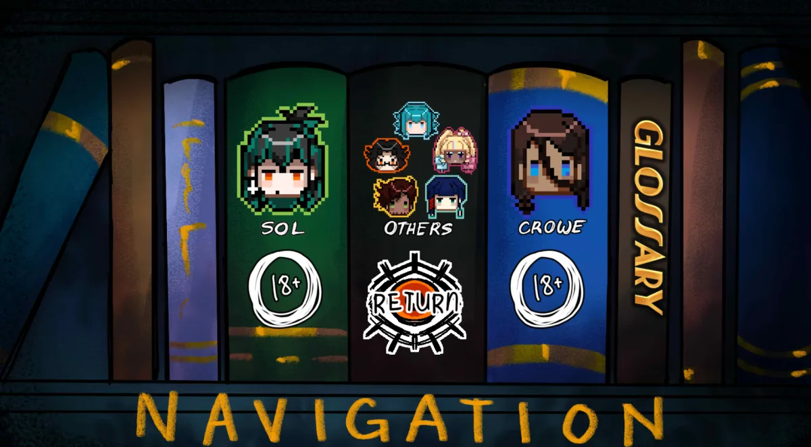

Play The Kid at the Back Online
Keyboard or touch to advance dialogue. Headphones recommended. First load may take a few seconds.
More Games You'll Like
What Is The Kid at the Back-
Here's how it starts. You're at Olympieus University. First day. New faces, new routines, the usual awkward shuffle of finding where you belong. There's this one guy -back row, doesn't talk much, keeps to himself. You might not even register him at first. That's fine. He's already registered you.
Developer fantasia built a yandere psychological horror visual novel that takes the most ordinary setting imaginable -a college classroom -and turns it into something deeply unsettling. Not through gore or shock. Through attention. The kind of attention that feels flattering until you realize it's been going on for weeks before you noticed.
Two characters define the experience. Sol Brugmansia is the kid in the back row -tall, quiet, with heterochromatic eyes and a stillness that reads as shyness if you're not paying close attention. You should pay closer attention. Crowe Ichabod is the class representative -warm, responsible, always looking out for everyone. His concern feels genuine. It takes a while to notice that it feels like surveillance too.
The demo is free, runs in your browser, and covers two in-game days. About 1-2 hours per route. Multiple endings. Animated CGs with subtle motion that catches your eye in ways static art doesn't. A glossary that updates as you discover things. Everything a finished visual novel has, in a demo that doesn't ask for your email or your money.
How to Play The Kid at the Back
Controls & Flow
Click or tap to read. When dialogue options appear, pick one. That's the whole interface -no inventory to manage, no combat to learn, no timer pressuring you. The game gives you space to read at your own speed. The tension builds through what characters say and, more importantly, what they don't.
The demo covers two in-game days. No mid-route saves -each run is one session. On replay, Ctrl key skips text you've already read, so getting back to a branching point takes seconds.
How Choices Work
Choices don't shout about their importance. There's no meter, no color coding, no "this will affect the story" warning. You pick what feels right, and the game remembers. A casual response in scene one might be the reason a character treats you differently in scene eight. You won't know which decisions were load-bearing until you replay and make different ones.
The experience rewards going in blind. Don't look up routes or endings beforehand. Answer like you would if these were real people in front of you. The ending you get is yours. Then play again with a different attitude -if you were warm, try reserved. If you trusted easily, hold back. The contrast between runs is the point.
Character Routes
| Character | Role | What the Route Feels Like | The Moment It Clicks |
|---|---|---|---|
| Sol Brugmansia | The kid in the back row | Quiet at first. He doesn't approach you -you have to go to him. But once you do, the attention is relentless. You'll start noticing things missing from your apartment. The arrangement of objects on your desk will feel slightly off. He knows your schedule. You never told him. | His surname, Brugmansia, is Angel's Trumpet -a flower that's intoxicating and lethal in equal measure. The first time you look it up, pieces start falling into place. |
| Crowe Ichabod | Class representative | Warm and responsible. He helps everyone. He's always checking in, always making sure you're okay. It takes a while before you realize his help comes with expectations. He's protecting you from things -and also from making your own choices. The concern that felt like safety starts to feel like a perimeter. | Crowe lost his family in a fire. A strict aunt raised him. When you understand what he's afraid of, his need for control makes a different kind of sense. Doesn't make it comfortable. |
The Kid at the Back Game Experience
The first thing you notice is how normal everything feels. The classroom could be any classroom. The hallways, the cafeteria, the routine of walking between buildings -it's aggressively ordinary. That's the trick. The game doesn't start in a dark alley or a haunted house. It starts where you spend half your actual life: sitting in a room full of people, not really looking at any of them, assuming everyone is basically what they appear to be.
Then the small things start. A classmate references something you mentioned in passing days ago. A detail about your schedule comes up in a conversation you weren't part of. Someone knows where you live. The game doesn't announce these moments -they slip in between the regular dialogue, easy to miss if you're clicking fast. But once you start noticing them, you can't stop. And you realize: someone in this room has been paying very, very close attention to you.
The animated CGs do a lot of the atmospheric heavy lifting. Unlike static visual novel backgrounds, these shift -a shadow moving in a hallway, a character's expression changing frame by frame, a door that's open now when it was closed a scene ago. The motion catches your peripheral vision. You learn to watch more carefully. Which is exactly what the game wants.
The supporting cast deserves mention. Hyugo, Sol's only friend, who enables his isolation without seeming to realize it. Geo and Deryl from Crowe's circle -Deryl in particular steals scenes, and her interactions shift completely depending on whose route you're on. Brittney and Jess fill out the social landscape. These aren't cardboard cutouts. They react, they have opinions, and they notice things about you that you might not have noticed yourself.
Why Fans Love The Kid at the Back
Two Routes, Two Different Fears
Sol's route makes you afraid of being watched. Crowe's route makes you afraid of being managed. They target completely different anxieties, which means replaying the other route doesn't feel like a retread -it feels like a different game using the same setting. Players who found Sol too intense often prefer Crowe. Players who found Crowe too controlling often find Sol's straightforward danger easier to handle. Both are valid. Neither is safe.
Your Character Actually Matters
You pick your name. You pick your pronouns. The protagonist isn't a pre-written character you're steering -it's you. And the game takes that seriously. Both love interests respond to your surname choice. The community has documented specific triggers tied to names with past-life implications. Crowe seems to recognize you from somewhere. Sol seems to have been waiting for you specifically. It's not just flavor text. It changes dialogue. It changes endings.
Free Demo, Full Polish
Animated CGs. A glossary that updates as your character learns things. An album system tracking scenes. Voice clips from both love interests. This is production value you expect from a finished commercial release, not a free browser demo. The developer's commitment to quality makes it easy to trust where the full game is headed. The demo doesn't feel like a preview -it feels like the first two chapters of something significant.
The Kid at the Back Key Features
Yandere Horror That Feels Personal
The terror doesn't come from monsters or jump scares. It comes from the slow realization that someone has been paying attention to you -not your character, you -in ways you never consented to. Sol breaks into your apartment, watches you sleep, uses sedatives. Crowe tracks your decisions and intervenes when he decides you're making a mistake. Both are invasions of different kinds. Both are grounded enough to feel plausible. That's what makes them stick.
Deep Lore That Rewards Curiosity
Sol's surname, Brugmansia, is a real plant -beautiful flowers, lethal if consumed. The game uses floral imagery as a code for relationship dynamics, and the glossary connects these dots as you discover them. Surname triggers suggest reincarnation cycles. Crowe seems to know things about your past that you don't. The demo gives you enough to start asking questions; the full game promises answers. The community is actively theorizing, and the developer feeds that with details that matter on replay.
The Kid at the Back Game Screenshots


The Kid at the Back Gameplay Videos
Player & Critic Reviews
played sol's route first. bad idea. not because it was bad - because now i can't stop thinking about it. there's a scene where you come back to your apartment and something is slightly off. the game doesn't tell you what. you just know. that's the whole horror of this thing.
genuinely impressed a free browser demo has animated cgs and voice clips. played through both routes in one night. crowe's route hit different on the second playthrough when i noticed stuff i completely missed the first time. replay value is real.
the surname thing caught me off guard. typed in my actual last name and crowe had dialogue i was not expecting. went down a rabbit hole on the community page after. there's actual lore behind it - not just an easter egg. the dev put thought into this.
deryl steals every scene she's in. not a romance option but honestly the best character. side cast actually reacts to which route you're on instead of just standing there like cardboard. makes the world feel real in a way the horror needs.
Browser Tips
No sound-
Click inside the game window once -browsers mute iframe audio until you interact. Check audio permissions via the lock icon in your address bar. Refresh after enabling.
Lag or black screen-
Close heavy tabs. Disable ad blockers temporarily. Wait 10-15 seconds for initialization. Still stuck- Try Chrome or Edge.
Lost progress-
No mid-route saves in the demo. Each run is one session. On replay, use the Ctrl key to fast-forward through text you've already read.
On mobile-
Landscape mode works. Desktop with headphones is the ideal setup -the voice clips and ambient audio make a difference.
The Kid at the Back Common Questions
The quiet kid in the back row. He's been waiting.
Free browser demo. Two routes. Dark secrets.
PLAY NOW